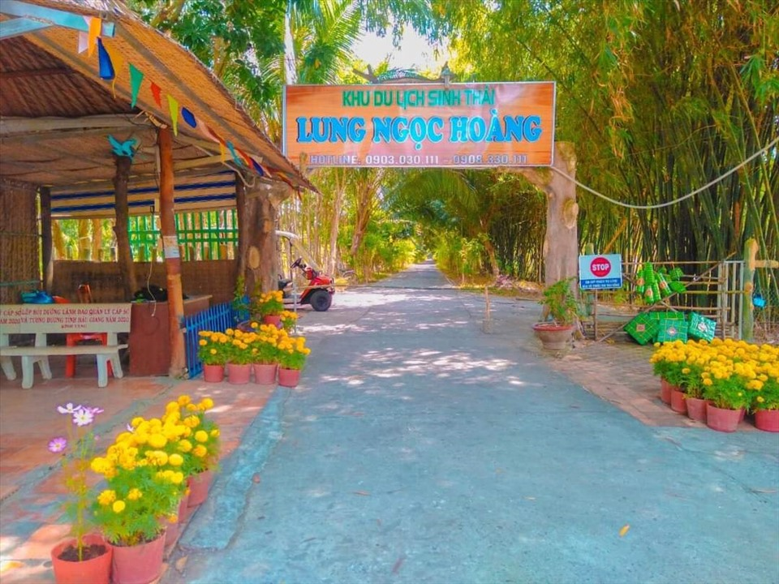
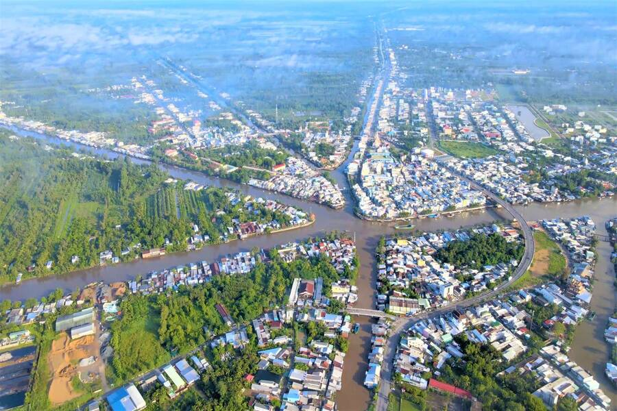
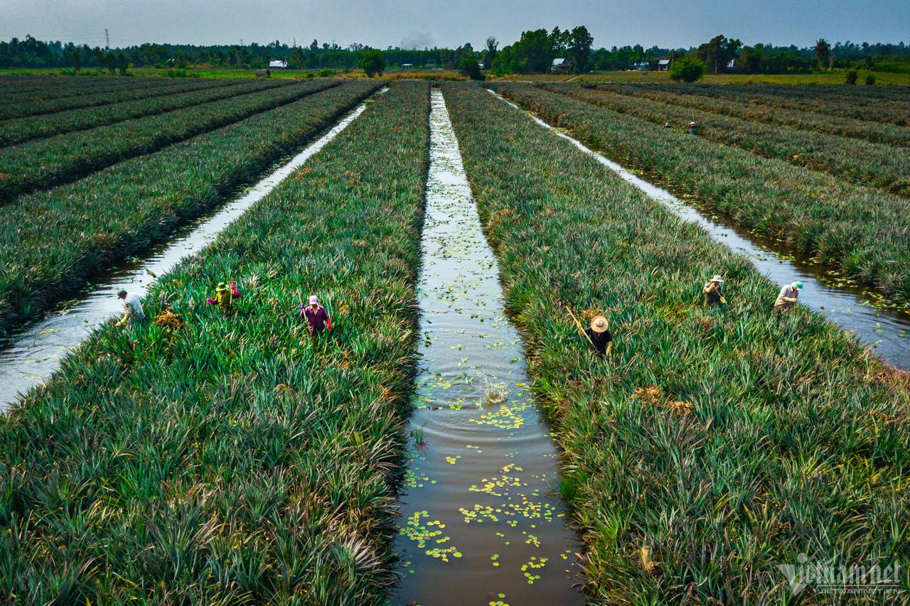

TỈNH HẬU GIANG
Vùng đất sinh thái xanh giữa lòng Đồng bằng sông Cửu Long, nổi tiếng với Lung Ngọc Hoàng và Chợ nổi Ngã Bảy.
Lịch sử hình thành tỉnh Hậu Giang
Hậu Giang nằm ở trung tâm Đồng bằng sông Cửu Long, có hệ thống sông ngòi dày đặc và đất đai màu mỡ rất thuận lợi cho phát triển nông nghiệp. Từ hàng trăm năm trước, vùng đất này đã thu hút cư dân đến khai hoang, lập nghiệp và hình thành nên các làng xã trù phú.
Trong quá trình phát triển của Nam Bộ, Hậu Giang là khu vực có vị trí giao thương quan trọng nhờ mạng lưới giao thông thủy. Sau nhiều lần điều chỉnh địa giới hành chính, ngày 01/01/2004, tỉnh Hậu Giang chính thức được tái lập.
Ngày nay, Hậu Giang đang phát triển mạnh về nông nghiệp công nghệ cao, công nghiệp chế biến và du lịch sinh thái, góp phần thúc đẩy sự phát triển kinh tế của khu vực miền Tây Nam Bộ.

Khu bảo tồn thiên nhiên Lung Ngọc Hoàng
Lung Ngọc Hoàng được xem là "lá phổi xanh" của tỉnh Hậu Giang. Khu bảo tồn có diện tích hàng nghìn héc-ta với hệ sinh thái đất ngập nước đặc trưng của vùng Đồng bằng sông Cửu Long.
Đây là nơi sinh sống của nhiều loài chim, cá và động thực vật quý hiếm. Du khách có thể đi xuồng len lỏi qua các cánh rừng, tận hưởng bầu không khí trong lành và khám phá hệ sinh thái tự nhiên.
Xem chi tiết
Chợ nổi Ngã Bảy
Chợ nổi Ngã Bảy là một trong những chợ nổi lâu đời nhất miền Tây. Chợ nằm tại nơi giao nhau của bảy nhánh sông lớn, tạo nên khung cảnh nhộn nhịp đặc trưng của vùng sông nước.
Các ghe thuyền chở đầy trái cây, nông sản và nhiều mặt hàng khác tạo nên bức tranh sinh động về đời sống thương mại trên sông. Đây là điểm đến hấp dẫn đối với du khách yêu thích văn hóa miền Tây.
Khu bảo tồn thiên nhiên
Ngoài Lung Ngọc Hoàng, Hậu Giang còn sở hữu nhiều vùng sinh thái tự nhiên với hệ động thực vật phong phú. Những khu vực này đóng vai trò quan trọng trong việc bảo vệ môi trường và cân bằng hệ sinh thái.
Các hoạt động du lịch sinh thái kết hợp giáo dục môi trường đang được địa phương chú trọng phát triển nhằm nâng cao nhận thức cộng đồng về bảo tồn thiên nhiên.

Đặc sản Cá thát lát
Cá thát lát là một trong những đặc sản nổi tiếng nhất của Hậu Giang. Thịt cá dai, thơm và giàu dinh dưỡng được chế biến thành nhiều món ăn hấp dẫn như chả cá thát lát, lẩu cá thát lát hay cá thát lát chiên giòn.
Sản phẩm cá thát lát Hậu Giang hiện đã trở thành thương hiệu nổi tiếng được nhiều du khách tìm mua làm quà sau chuyến tham quan.

Khóm Cầu Đúc
Khóm Cầu Đúc là đặc sản nông nghiệp nổi tiếng của thành phố Ngã Bảy. Nhờ điều kiện thổ nhưỡng phù hợp, trái khóm nơi đây có vị ngọt, giòn và hương thơm đặc trưng.
Du khách có thể tham quan các vườn khóm rộng lớn, tìm hiểu quy trình canh tác và thưởng thức nhiều sản phẩm chế biến từ khóm như mứt, nước ép và bánh kẹo.
Điểm nổi bật của Hậu Giang
| Địa điểm/Đặc sản | Đặc điểm nổi bật |
|---|---|
| Lung Ngọc Hoàng | Khu sinh thái tự nhiên nổi tiếng |
| Chợ nổi Ngã Bảy | Văn hóa giao thương đường thủy |
| Cá thát lát | Đặc sản nổi tiếng của tỉnh |
| Khóm Cầu Đúc | Trái cây đặc sản chất lượng cao |
| Du lịch sinh thái | Tiềm năng phát triển mạnh |
Hình ảnh nổi bật của Hậu Giang